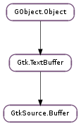

| static | new(table) |
| static | new_with_language(language) |
| backward_iter_to_source_mark(iter, category) | |
| begin_not_undoable_action() | |
| can_redo() | |
| can_undo() | |
| create_source_mark(name, category, where) | |
| end_not_undoable_action() | |
| ensure_highlight(start, end) | |
| forward_iter_to_source_mark(iter, category) | |
| get_context_classes_at_iter(iter) | |
| get_highlight_matching_brackets() | |
| get_highlight_syntax() | |
| get_language() | |
| get_max_undo_levels() | |
| get_source_marks_at_iter(iter, category) | |
| get_source_marks_at_line(line, category) | |
| get_style_scheme() | |
| get_undo_manager() | |
| iter_backward_to_context_class_toggle(iter, context_class) | |
| iter_forward_to_context_class_toggle(iter, context_class) | |
| iter_has_context_class(iter, context_class) | |
| redo() | |
| remove_source_marks(start, end, category) | |
| set_highlight_matching_brackets(highlight) | |
| set_highlight_syntax(highlight) | |
| set_language(language) | |
| set_max_undo_levels(max_undo_levels) | |
| set_style_scheme(scheme) | |
| set_undo_manager(manager) | |
| undo() |
| Name | Type | Flags | Description |
|---|---|---|---|
| can-redo | bool | r | Whether Redo operation is possible |
| can-undo | bool | r | Whether Undo operation is possible |
| highlight-matching-brackets | bool | r/w | Whether to highlight matching brackets |
| highlight-syntax | bool | r/w | Whether to highlight syntax in the buffer |
| language | GtkSource.Language | r/w | Language object to get highlighting patterns from |
| max-undo-levels | int | r/w | Number of undo levels for the buffer |
| style-scheme | GtkSource.StyleScheme | r/w | Style scheme |
| undo-manager | GtkSource.UndoManager | r/w | The buffer undo manager |
| Name | Parameters | Return | Description |
|---|---|---|---|
| bracket-matched | Gtk.TextIter, GtkSource.BracketMatchType | Sets iter to a valid iterator pointing to the matching bracket if state is GtkSource.BracketMatchType.FOUND. Otherwise iter is meaningless. | |
| highlight-updated | Gtk.TextIter, Gtk.TextIter | ||
| redo | Redoes the last undo operation. Use GtkSource.Buffer.can_redo () to check whether a call to this function will have any effect. | ||
| source-mark-updated | Gtk.TextMark | The ::source-mark-updated signal is emitted each time a mark is added to, moved or removed from the buffer. | |
| undo | Undoes the last user action which modified the buffer. Use GtkSource.Buffer.can_undo () to check whether a call to this function will have any effect. Actions are defined as groups of operations between a call to Gtk.TextBuffer.begin_user_action () and Gtk.TextBuffer.end_user_action (), or sequences of similar edits (inserts or deletes) on the same line. |
| Name | Type | Access |
|---|---|---|
| parent_instance | Gtk.TextBuffer | r |
Bases: Gtk.TextBuffer
| Parameters: | table (Gtk.TextTagTable or None) – a Gtk.TextTagTable, or None to create a new one. |
|---|---|
| Returns: | a new source buffer. |
| Return type: | GtkSource.Buffer |
Creates a new source buffer.
| Parameters: | language (GtkSource.Language) – a GtkSource.Language. |
|---|---|
| Returns: | a new source buffer which will highlight text according to the highlighting patterns in language. |
| Return type: | GtkSource.Buffer |
Creates a new source buffer using the highlighting patterns in language. This is equivalent to creating a new source buffer with a new tag table and then calling GtkSource.Buffer.set_language ().
| Parameters: |
|
|---|---|
| Returns: | whether iter was moved. |
| Return type: |
Moves iter to the position of the previous GtkSource.Mark of the given category. Returns True if iter was moved. If category is None, the previous source mark can be of any category.
Marks the beginning of a not undoable action on the buffer, disabling the undo manager. Typically you would call this function before initially setting the contents of the buffer (e.g. when loading a file in a text editor).
You may nest GtkSource.Buffer.begin_not_undoable_action () / GtkSource.Buffer.end_not_undoable_action () blocks.
| Returns: | True if a redo is possible. |
|---|---|
| Return type: | bool |
Determines whether a source buffer can redo the last action (i.e. if the last operation was an undo).
| Returns: | True if it’s possible to undo the last action. |
|---|---|
| Return type: | bool |
Determines whether a source buffer can undo the last action.
| Parameters: |
|
|---|---|
| Returns: | a new GtkSource.Mark, owned by the buffer. |
| Return type: |
Creates a source mark in the buffer of category category. A source mark is a Gtk.TextMark but organised into categories. Depending on the category a pixbuf can be specified that will be displayed along the line of the mark.
Like a Gtk.TextMark, a GtkSource.Mark can be anonymous if the passed name is None. Also, the buffer owns the marks so you shouldn’t unreference it.
Marks always have left gravity and are moved to the beginning of the line when the user deletes the line they were in.
Typical uses for a source mark are bookmarks, breakpoints, current executing instruction indication in a source file, etc..
Marks the end of a not undoable action on the buffer. When the last not undoable block is closed through the call to this function, the list of undo actions is cleared and the undo manager is re-enabled.
| Parameters: |
|
|---|
Forces buffer to analyze and highlight the given area synchronously.
This is a potentially slow operation and should be used only when you need to make sure that some text not currently visible is highlighted, for instance before printing.
| Parameters: |
|
|---|---|
| Returns: | whether iter was moved. |
| Return type: |
Moves iter to the position of the next GtkSource.Mark of the given category. Returns True if iter was moved. If category is None, the next source mark can be of any category.
| Parameters: | iter (Gtk.TextIter) – a Gtk.TextIter. |
|---|---|
| Returns: | a new None terminated array of context class names. Use GLib.strfreev () to free the array if it is no longer needed. |
| Return type: | [str] |
Get all defined context classes at iter.
| Returns: | True if the source buffer will highlight matching brackets. |
|---|---|
| Return type: | bool |
Determines whether bracket match highlighting is activated for the source buffer.
| Returns: | True if syntax highlighting is enabled, False otherwise. |
|---|---|
| Return type: | bool |
Determines whether syntax highlighting is activated in the source buffer.
| Returns: | the GtkSource.Language associated with the buffer, or None. |
|---|---|
| Return type: | GtkSource.Language |
Returns the GtkSource.Language associated with the buffer, see GtkSource.Buffer.set_language (). The returned object should not be unreferenced by the user.
| Returns: | the maximum number of possible undo levels or -1 if no limit is set. |
|---|---|
| Return type: | int |
Determines the number of undo levels the buffer will track for buffer edits.
| Parameters: |
|
|---|---|
| Returns: | a newly allocated GLib.SList. |
| Return type: |
Returns the list of marks of the given category at iter. If category is None it returns all marks at iter.
| Parameters: | |
|---|---|
| Returns: | a newly allocated GLib.SList. |
| Return type: |
Returns the list of marks of the given category at line. If category is None, all marks at line are returned.
| Returns: | the GtkSource.StyleScheme associated with the buffer, or None. |
|---|---|
| Return type: | GtkSource.StyleScheme |
Returns the GtkSource.StyleScheme associated with the buffer, see GtkSource.Buffer.set_style_scheme (). The returned object should not be unreferenced by the user.
| Returns: | the GtkSource.UndoManager associated with the buffer, or None. |
|---|---|
| Return type: | GtkSource.UndoManager |
Returns the GtkSource.UndoManager associated with the buffer, see GtkSource.Buffer.set_undo_manager (). The returned object should not be unreferenced by the user.
| Parameters: |
|
|---|---|
| Returns: | whether we found a context class toggle before iter |
| Return type: |
Moves backward to the next toggle (on or off) of the context class. If no matching context class toggles are found, returns False, otherwise True. Does not return toggles located at iter, only toggles after iter. Sets iter to the location of the toggle, or to the end of the buffer if no toggle is found.
| Parameters: |
|
|---|---|
| Returns: | whether we found a context class toggle after iter |
| Return type: |
Moves forward to the next toggle (on or off) of the context class. If no matching context class toggles are found, returns False, otherwise True. Does not return toggles located at iter, only toggles after iter. Sets iter to the location of the toggle, or to the end of the buffer if no toggle is found.
| Parameters: |
|
|---|---|
| Return type: |
Check if the class context_klass is set on iter.
Redoes the last undo operation. Use GtkSource.Buffer.can_redo () to check whether a call to this function will have any effect.
| Parameters: |
|
|---|
Remove all marks of category between start and end from the buffer. If category is None, all marks in the range will be removed.
| Parameters: | highlight (bool) – True if you want matching brackets highlighted. |
|---|
Controls the bracket match highlighting function in the buffer. If activated, when you position your cursor over a bracket character (a parenthesis, a square bracket, etc.) the matching opening or closing bracket character will be highlighted.
| Parameters: | highlight (bool) – True to enable syntax highlighting, False to disable it. |
|---|
Controls whether syntax is highlighted in the buffer. If highlight is True, the text will be highlighted according to the syntax patterns specified in the language set with GtkSource.Buffer.set_language (). If highlight is False, syntax highlighting is disabled and all the Gtk.TextTag objects that have been added by the syntax highlighting engine are removed from the buffer.
| Parameters: | language (GtkSource.Language or None) – a GtkSource.Language to set, or None. |
|---|
Associate a GtkSource.Language with the buffer. If language is not-None and syntax highlighting is enabled (see GtkSource.Buffer.set_highlight_syntax ()), the syntax patterns defined in language will be used to highlight the text contained in the buffer. If language is None, the text contained in the buffer is not highlighted.
The buffer holds a reference to language.
| Parameters: | max_undo_levels (int) – the desired maximum number of undo levels. |
|---|
Sets the number of undo levels for user actions the buffer will track. If the number of user actions exceeds the limit set by this function, older actions will be discarded.
If max_undo_levels is -1, no limit is set.
A new action is started whenever the function Gtk.TextBuffer.begin_user_action () is called. In general, this happens whenever the user presses any key which modifies the buffer, but the undo manager will try to merge similar consecutive actions, such as multiple character insertions into one action. But, inserting a newline does start a new action.
| Parameters: | scheme (GtkSource.StyleScheme or None) – a GtkSource.StyleScheme or None. |
|---|
Sets style scheme used by the buffer. If scheme is None no style scheme is used.
| Parameters: | manager (GtkSource.UndoManager or None) – A GtkSource.UndoManager or None. |
|---|
Set the buffer undo manager. If manager is None the default undo manager will be set.
Undoes the last user action which modified the buffer. Use GtkSource.Buffer.can_undo () to check whether a call to this function will have any effect.
Actions are defined as groups of operations between a call to Gtk.TextBuffer.begin_user_action () and Gtk.TextBuffer.end_user_action (), or sequences of similar edits (inserts or deletes) on the same line.